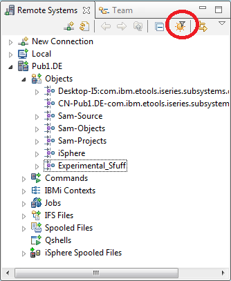

With iSphere RSE Filter Management you can export single or all filters from your workspace to a repository (XML File). You can import single or all filters from a repository to your workspace. The filters in the workspace and in the repository will be provided in four separate areas.
In the areas you can define actions for the filters you want to perform. The actions are.
After defining all actions for the specific filters you have to perform the actions. The changes will be applied.
There are several scenarios you might find this new feature useful.
To open the iSphere RSE Filter Management dialog click on the Sun icon in the upper right corner of the view Remote Systems or select RSE Filter Management from the iSphere menu.

Specify the filter pool of your workspace and the repository. If the repository you specify does not exist you will be ask for creation.
Choose first the action for the filters. After this click "Perform actions". The changes will be applied to your workspace and to your repository.